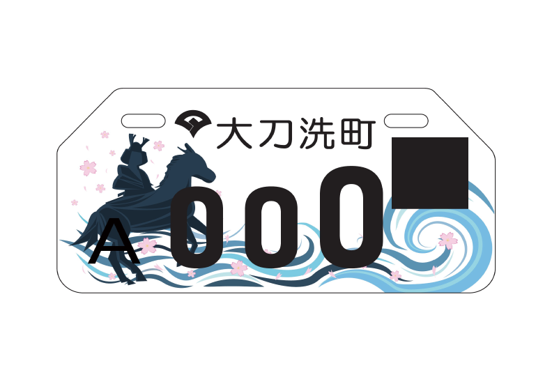

太刀洗町ミニバイク用ナンバープレート
制作期間：5ヶ月
使用ツール：Illustrator
プロジェクトメンバー：7人
太刀洗町ミニバイク用ナンバープレートを制作しました。
太刀洗町の名前の由来である菊池武光と川を使用したデザインで、波の色を変えたり波の動きを一つ一つ描いたりして全体的に動きのあるデザインにしました。
このデザインは、2019年11月10日に開催された「太刀洗町ドリームまつり」の来場者による投票にて1位に選ばれたため、採用されることになりました。